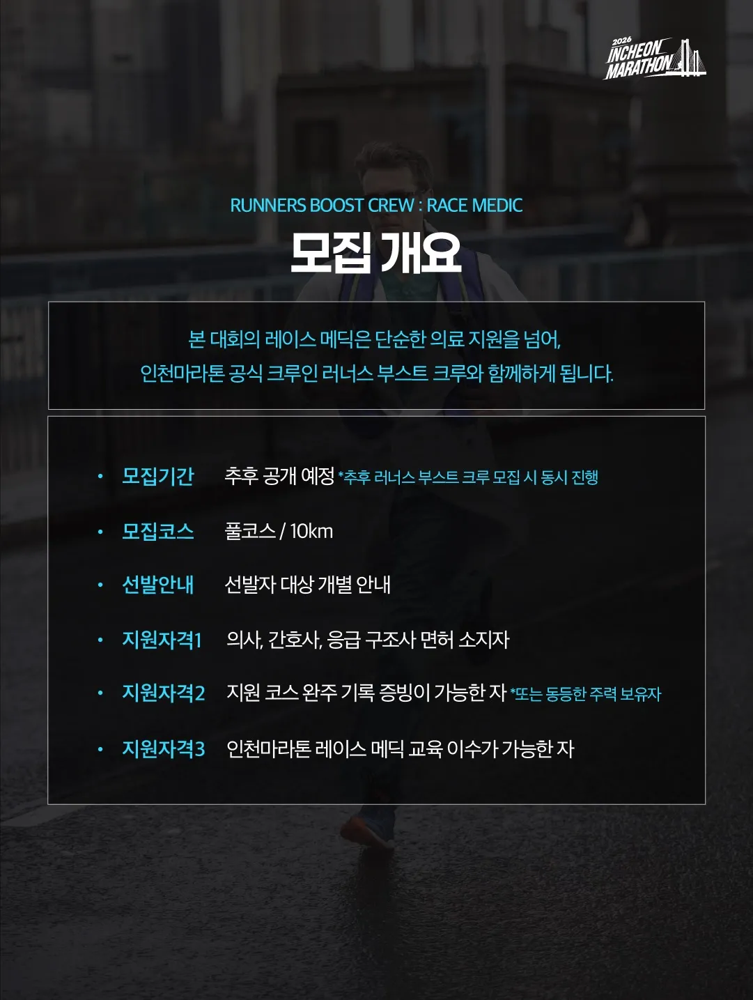
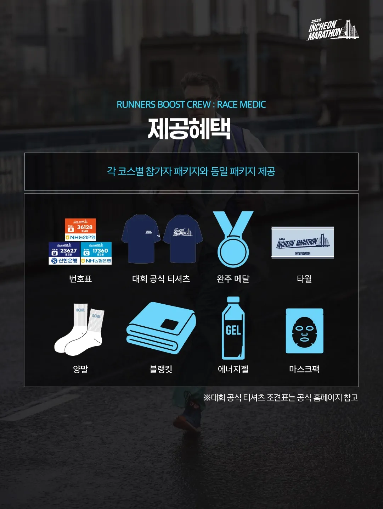

도로롱제와 경찰 공무원 동원은 기본


도로롱제와 경찰 공무원 동원은 기본
저딴거 허가 해주는 지자체장들이 또라이들임
중앙부처 후원이면 해줘야할걸
왜냐면 지자체에서 쓸데없는 축제 하는거보다 저게 더 사람 많이오거든..
김천이야 피식대학때문에 어떻게든 이슈 터져서 이제 인기지만..
웬만한 지방은 소규모 축제 이런거 사람 별로안오고 파리날리는 축제도 많음.
수도권이 저런거 할 정도는 아니지 않음? 마라톤 하면서 교통 통제하고 상가에서 화장실 사용만 하고 가서 인근 상인들 오히려 힘들다던데
쌀쌀쌀
아예 이제 경찰도 같이 뛰면서 통제하라하지 ㅋㅋㅋ
의료문제해결못하면 허가 안내주기
의룡인들이 병신같아 보이냐 ㅋㅋㅋㅋㅋㅋㅋ
거대한 무인가게구만
그냥 나라 자체가 거대한 개좆소임 ㅋㅋ
나거좆ㄷㄷ
약아빠졌네
체육회등에서 달달한듯
나오는 이슈마다 괴담이네
걍 뇌피셜이고 이거 지자체에서 공식적으로 하는 행사라 주최측이 돈버는 거랑 아무 상관없음
참가비 받잖아....
찾아보니 2026 인천마라톤 참가비 풀코스가 8만원이네
수익 주체가 인천시라 돈벌려고 하는 마라톤이 아니라서 돈벌려고 저런거 기획할 이유가 없단 소리지 참가비가 뭔 상관?
참가비는 있는데 왜 인건비는 없냐 이거지;;;
단순히 저기에 안 쓰여있는건지 모르겠다만
돈 받는데 왜 돈 안 쓰냐 정도는 물어볼 수 있는 거 아님???
마라톤 좋아하는 의사들이 공짜 마라톤 참여하면서 의료 지원도 하는 거고 레이스 메딕 엄청 예전부터 다른 대회도 다 있던 제도임
마라톤 이슈되닌까 욕설 자유이용권 발급됐다고 걍 제대로 알아보지도 않고
뭐 하나 깔 꺼 없나 눈 뻘개져서 트집거리 찾고 있는 걸로밖에 안보임
공짜 맞는가보네....
있었던 거라 해서 까지 않을 이유는 안 된다고 본다. 본질에 충실한 다음 보완책으로 써야 하는 방편 아닌가
근데 주최가 지자체면 뭐 달라짐?
지자체는 장사 안한다고 믿는거임?
주최측이 돈을 버냐 안버냐는 둘째치고 의료진 페이에 대한 얘기는 없고 "참가자와 동일한 혜택" 달랑 하나 있는데
최소한 뭐 상담하여 결정이라던가 내규에 따른다던가 뭔가 언급은 있어야지
의료진 무상으로 부려먹는건 쌀먹 아님?
요새 마라톤 신청이 빡세서 티켓주면 하는 의사 꽤있는걸로암
의료진은 당연히 따로 있고 레이스 닥터는 직업이 의사면 참가비 안받고 공짜로 마라톤 참가 시켜줄께요. 대신 달리다가 옆에 사람 응급 상황 터지면 도와줘야 함 ㅇㅋ? 이런 개념임

그치만 저거하러가서 인증박기는 딱좋네
트레일대회에서야 엠블이 못따라 다니니까 메딕 러너가 필요하지만
로드 대회에서야 엠뷸 다니면 되는데
옛날에 코로나때 저런식으로햇엇는데 ㅋㅋㅋㅋ
근데 찾아보니까 제도가 갑자기 만들어진건 아니고 다른대회도 있었네. 주최측 의료진은 중간중간 포인트마다 있고, 응급환자 발생하면 오게 되어있음. 근데 대기 장소에서 환자 발생 지점으로 가는데 시간이 걸리는 문제가 생김. 이때 같이 뛰던 의료인이 현장에서 긴급조치를 해주고 의료진에게 연락하는 방식으로 운영하는듯. 긴급조치 해주는 시간은 마라톤 기록에서 빼주고.
홍보문구는 ai로 쌀먹하고 ㅋㅋㅋㅋ '~가 아닙니다. ~ 입니다.' 쇠냄새 좆됨
힘들어서 상황발생했을때 어떻게 할건데 ㅋㅋㅋ
그리고 얼마주는지는 왜 안나옴
이 이야기는 내가 레이스메딕으로 참가하여 1등으로 들어온것에 관한것이다
쌀먹마라톤 ㅋㅋㅋㅋ
오히려 '돈을 받으면' 일종의 도급 계약이 성립되서 나중에 법적 책임에서 자유로울 수가 없음.
할 거면 차라리 돈을 안받는 게 더 나을 듯. 그게 싫으면 안하면 되고
한국인만큼 책임지기 싫어하면서 책임소재 따지는거 좋아하는 민족도 드물듯
마라톤 하다 심정지, 경련.. 등 응급한자 병원에 폭증함. 평일날 다치면 병원이라도 빨리 갈수 있지만 대회하다 쓰러지면 응급실 가도 사람 많아서 케어 못받을수도 있음.
이번에 소방청 주관 마라톤 다녀왔는데
세상에서 제일 안전한 마라톤이였음
저런건 시골애서나 해라
압구정에서 분당까지 그냥 경부고속도로 막아버리고 거기서 하지 그래?
부산까지 ㄱ

하다하다 이제 쌀라톤이야?